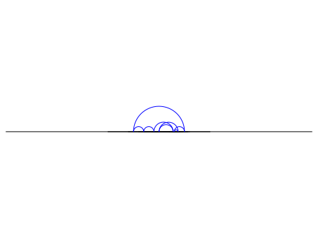
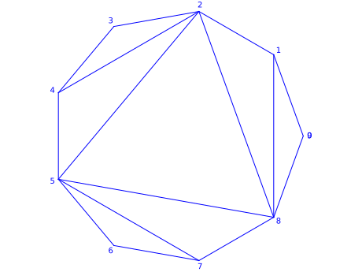

Frieze Patterns¶
This implements the original frieze patterns due to Conway and Coxeter.
Such a frieze pattern is considered as a sequence of nonnegative
integers following [CoCo1] and [CoCo2] using
sage.combinat.path_tableaux.path_tableau.
AUTHORS:
Bruce Westbury (2019): initial version
- class sage.combinat.path_tableaux.frieze.FriezePattern¶
Bases:
sage.combinat.path_tableaux.path_tableau.PathTableauA frieze pattern.
We encode a frieze pattern as a sequence in a fixed ground field.
INPUT:
fp– a sequence of elements offieldfield– (default:QQ) the ground field
EXAMPLES:
sage: t = path_tableaux.FriezePattern([1,2,1,2,3,1]) sage: path_tableaux.CylindricalDiagram(t) [0, 1, 2, 1, 2, 3, 1, 0] [ , 0, 1, 1, 3, 5, 2, 1, 0] [ , , 0, 1, 4, 7, 3, 2, 1, 0] [ , , , 0, 1, 2, 1, 1, 1, 1, 0] [ , , , , 0, 1, 1, 2, 3, 4, 1, 0] [ , , , , , 0, 1, 3, 5, 7, 2, 1, 0] [ , , , , , , 0, 1, 2, 3, 1, 1, 1, 0] [ , , , , , , , 0, 1, 2, 1, 2, 3, 1, 0] sage: TestSuite(t).run() sage: t = path_tableaux.FriezePattern([1,2,7,5,3,7,4,1]) sage: path_tableaux.CylindricalDiagram(t) [0, 1, 2, 7, 5, 3, 7, 4, 1, 0] [ , 0, 1, 4, 3, 2, 5, 3, 1, 1, 0] [ , , 0, 1, 1, 1, 3, 2, 1, 2, 1, 0] [ , , , 0, 1, 2, 7, 5, 3, 7, 4, 1, 0] [ , , , , 0, 1, 4, 3, 2, 5, 3, 1, 1, 0] [ , , , , , 0, 1, 1, 1, 3, 2, 1, 2, 1, 0] [ , , , , , , 0, 1, 2, 7, 5, 3, 7, 4, 1, 0] [ , , , , , , , 0, 1, 4, 3, 2, 5, 3, 1, 1, 0] [ , , , , , , , , 0, 1, 1, 1, 3, 2, 1, 2, 1, 0] [ , , , , , , , , , 0, 1, 2, 7, 5, 3, 7, 4, 1, 0] sage: TestSuite(t).run() sage: t = path_tableaux.FriezePattern([1,3,4,5,1]) sage: path_tableaux.CylindricalDiagram(t) [ 0, 1, 3, 4, 5, 1, 0] [ , 0, 1, 5/3, 7/3, 2/3, 1, 0] [ , , 0, 1, 2, 1, 3, 1, 0] [ , , , 0, 1, 1, 4, 5/3, 1, 0] [ , , , , 0, 1, 5, 7/3, 2, 1, 0] [ , , , , , 0, 1, 2/3, 1, 1, 1, 0] [ , , , , , , 0, 1, 3, 4, 5, 1, 0] sage: TestSuite(t).run()
This constructs the examples from [HJ18]:
sage: K.<sqrt3> = NumberField(x^2-3) sage: t = path_tableaux.FriezePattern([1,sqrt3,2,sqrt3,1,1], field=K) sage: path_tableaux.CylindricalDiagram(t) [ 0, 1, sqrt3, 2, sqrt3, 1, 1, 0] [ , 0, 1, sqrt3, 2, sqrt3, sqrt3 + 1, 1, 0] [ , , 0, 1, sqrt3, 2, sqrt3 + 2, sqrt3, 1, 0] [ , , , 0, 1, sqrt3, sqrt3 + 2, 2, sqrt3, 1, 0] [ , , , , 0, 1, sqrt3 + 1, sqrt3, 2, sqrt3, 1, 0] [ , , , , , 0, 1, 1, sqrt3, 2, sqrt3, 1, 0] [ , , , , , , 0, 1, sqrt3 + 1, sqrt3 + 2, sqrt3 + 2, sqrt3 + 1, 1, 0] [ , , , , , , , 0, 1, sqrt3, 2, sqrt3, 1, 1, 0] sage: TestSuite(t).run() sage: K.<sqrt2> = NumberField(x^2-2) sage: t = path_tableaux.FriezePattern([1,sqrt2,1,sqrt2,3,2*sqrt2,5,3*sqrt2,1], field=K) sage: path_tableaux.CylindricalDiagram(t) [ 0, 1, sqrt2, 1, sqrt2, 3, 2*sqrt2, 5, 3*sqrt2, 1, 0] [ , 0, 1, sqrt2, 3, 5*sqrt2, 7, 9*sqrt2, 11, 2*sqrt2, 1, 0] [ , , 0, 1, 2*sqrt2, 7, 5*sqrt2, 13, 8*sqrt2, 3, sqrt2, 1, 0] [ , , , 0, 1, 2*sqrt2, 3, 4*sqrt2, 5, sqrt2, 1, sqrt2, 1, 0] [ , , , , 0, 1, sqrt2, 3, 2*sqrt2, 1, sqrt2, 3, 2*sqrt2, 1, 0] [ , , , , , 0, 1, 2*sqrt2, 3, sqrt2, 3, 5*sqrt2, 7, 2*sqrt2, 1, 0] [ , , , , , , 0, 1, sqrt2, 1, 2*sqrt2, 7, 5*sqrt2, 3, sqrt2, 1, 0] [ , , , , , , , 0, 1, sqrt2, 5, 9*sqrt2, 13, 4*sqrt2, 3, 2*sqrt2, 1, 0] [ , , , , , , , , 0, 1, 3*sqrt2, 11, 8*sqrt2, 5, 2*sqrt2, 3, sqrt2, 1, 0] [ , , , , , , , , , 0, 1, 2*sqrt2, 3, sqrt2, 1, sqrt2, 1, sqrt2, 1, 0] [ , , , , , , , , , , 0, 1, sqrt2, 1, sqrt2, 3, 2*sqrt2, 5, 3*sqrt2, 1, 0] sage: TestSuite(t).run()
- change_ring(R)¶
Return
selfas a frieze pattern with coefficients inRassuming there is a canonical coerce map from the base ring ofselftoR.EXAMPLES:
sage: path_tableaux.FriezePattern([1,2,7,5,3,7,4,1]).change_ring(RealField()) [0.000000000000000, 1.00000000000000, ... 4.00000000000000, 1.00000000000000, 0.000000000000000] sage: path_tableaux.FriezePattern([1,2,7,5,3,7,4,1]).change_ring(GF(7)) Traceback (most recent call last): ... TypeError: no base extension defined
- check()¶
Check that
selfis a valid frieze pattern.
- is_integral()¶
Return
Trueif all entries of the frieze pattern are positive integers.EXAMPLES:
sage: path_tableaux.FriezePattern([1,2,7,5,3,7,4,1]).is_integral() True sage: path_tableaux.FriezePattern([1,3,4,5,1]).is_integral() False
- is_positive()¶
Return
Trueif all elements ofselfare positive.This implies that all entries of
CylindricalDiagram(self)are positive.Warning
There are orders on all fields. These may not be ordered fields as they may not be compatible with the field operations. This method is intended to be used with ordered fields only.
EXAMPLES:
sage: path_tableaux.FriezePattern([1,2,7,5,3,7,4,1]).is_positive() True sage: path_tableaux.FriezePattern([1,-3,4,5,1]).is_positive() False sage: K.<sqrt3> = NumberField(x^2-3) sage: path_tableaux.FriezePattern([1,sqrt3,1],K).is_positive() True
- is_skew()¶
Return
Trueifselfis skew andFalseif not.EXAMPLES:
sage: path_tableaux.FriezePattern([1,2,1,2,3,1]).is_skew() False sage: path_tableaux.FriezePattern([2,2,1,2,3,1]).is_skew() True
- local_rule(i)¶
Return the \(i\)-th local rule on
self.This interprets
selfas a list of objects. This method first takes the list of objects of length three consisting of the \((i-1)\)-st, \(i\)-th and \((i+1)\)-term and applies the rule. It then replaces the \(i\)-th object by the object returned by the rule.EXAMPLES:
sage: t = path_tableaux.FriezePattern([1,2,1,2,3,1]) sage: t.local_rule(3) [1, 2, 5, 2, 3, 1] sage: t = path_tableaux.FriezePattern([1,2,1,2,3,1]) sage: t.local_rule(0) Traceback (most recent call last): ... ValueError: 0 is not a valid integer
- plot(model='UHP')¶
Plot the frieze as an ideal hyperbolic polygon.
This is only defined up to isometry of the hyperbolic plane.
We are identifying the boundary of the hyperbolic plane with the real projective line.
The option
modelmust be one of'UHP'- (default) for the upper half plane model'PD'- for the Poincare disk model'KM'- for the Klein model
The hyperboloid model is not an option as this does not implement boundary points.
 EXAMPLES:
sage: t = path_tableaux.FriezePattern([1,2,7,5,3,7,4,1]) sage: t.plot() Graphics object consisting of 18 graphics primitives sage: t.plot(model='UHP') Graphics object consisting of 18 graphics primitives sage: t.plot(model='PD') Traceback (most recent call last): ... TypeError: '>' not supported between instances of 'NotANumber' and 'Pi' sage: t.plot(model='KM') Graphics object consisting of 18 graphics primitives
- triangulation()¶
Plot a regular polygon with some diagonals.
If
selfis positive and integral then this will be a triangulation. EXAMPLES:
sage: path_tableaux.FriezePattern([1,2,7,5,3,7,4,1]).triangulation() Graphics object consisting of 25 graphics primitives sage: path_tableaux.FriezePattern([1,2,1/7,5,3]).triangulation() Graphics object consisting of 12 graphics primitives sage: K.<sqrt2> = NumberField(x^2-2) sage: path_tableaux.FriezePattern([1,sqrt2,1,sqrt2,3,2*sqrt2,5,3*sqrt2,1], field=K).triangulation() Graphics object consisting of 24 graphics primitives
- width()¶
Return the width of
self.If the first and last terms of
selfare 1 then this is the length ofselfplus two and otherwise is undefined.EXAMPLES:
sage: path_tableaux.FriezePattern([1,2,1,2,3,1]).width() 8 sage: path_tableaux.FriezePattern([1,2,1,2,3,4]).width() is None True
{kind=link}
{kind=link}
- class sage.combinat.path_tableaux.frieze.FriezePatterns(field)¶
Bases:
sage.combinat.path_tableaux.path_tableau.PathTableauxThe set of all frieze patterns.
EXAMPLES:
sage: P = path_tableaux.FriezePatterns(QQ) sage: fp = P((1, 1, 1)) sage: fp [1] sage: path_tableaux.CylindricalDiagram(fp) [1, 1, 1] [ , 1, 2, 1] [ , , 1, 1, 1]
- Element¶
alias of
FriezePattern